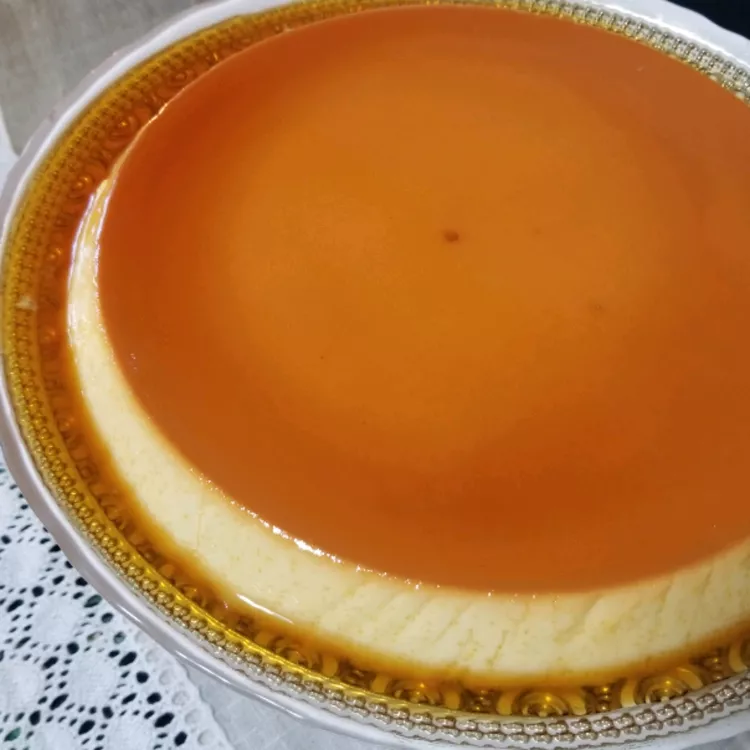

Creamy Caramel Flan

Description
Experience the delicious blend of cheesecake and flan in this Caramel Flan. With a smooth custard base and a rich caramel layer, it’s a delightful dessert that’s easy to make yet impressive enough for any occasion. Enjoy a slice of this creamy treat that’s sure to please!
Ingredients
- ¾ cup white sugar
- 1 (8-ounce) package cream cheese, softened
- 5 large eggs
- 1 (14-ounce) can sweetened condensed milk
- 1 (12 fluid ounce) can evaporated milk
- 1 teaspoon vanilla extract
Directions
- Preheat the oven to 350°F (175°C).
- In a small saucepan, cook the sugar over medium-low heat, stirring occasionally until it turns golden. Pour the caramel into a 10-inch round baking dish, tilting to coat the bottom and sides, and set aside.
- In a large bowl, beat the cream cheese until smooth. Add the eggs one at a time, mixing well after each addition. Stir in the sweetened condensed milk, evaporated milk, and vanilla until smooth.
- Pour the mixture into the caramel-coated baking dish.
- Line a roasting pan with a damp kitchen towel and place the baking dish inside. Fill the roasting pan with boiling water to reach halfway up the sides of the baking dish.
- Bake for 50 to 60 minutes, until the center is just set. Cool on a wire rack for 1 hour, then refrigerate for at least 8 hours or overnight.
- To unmold, run a knife around the edges of the baking dish and invert onto a rimmed serving platter.